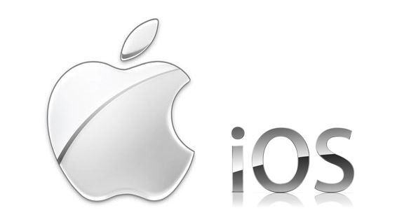

Los Diferentes Tipos De Sisitemas Operativos
IOS
iOS es un sistema operativo móvil de código cerrado desarrollado por Apple Inc. Originalmente desarrollado para el iPhone (iPhone OS), después se utilizó en dispositivos como el iPod touch y el iPad. Desde el 2019 el iPad pasó a tener otro sistema operativo, esto para diferenciarlo del iPhone, aunque iPadOS se basa en éste con diferencias sustanciales que lo diferencian del mismo. La última versión del sistema operativo es iOS 17 (lanzada en septiembre de 2023) que sustituye a iOS 16 con el objetivo principal de mejorar la experiencia del usuario integrando cambios relevantes, entre ellos la opción de crear y personalizar distintas pantallas de bloqueo similar a como funcionan las esferas del Apple Watch, y otros detalles de menor índole como la posibilidad de mostrar el porcentaje de batería en los iPhone con barra de estado reducida debido a los elementos de hardware integrados en la pantalla como el "Notch" o la "Dynamic island".
Windows 10 Mobile
Windows 10 Mobile fue un sistema operativo móvil, desarrollado por Microsoft y diseñado para teléfonos inteligentes y tabletas. Es parte de las ediciones de Windows 10 y sucesor de Windows Phone 8.1. El 14 de enero de 2020, Microsoft dio por descontinuado este sistema operativo. El 8 de octubre de 2017, el ejecutivo de Microsoft, Joe Belfiore, reveló que la compañía ya no desarrollaría nuevas funciones o hardware para teléfonos con Windows, debido a su baja participación en el mercado y la consiguiente falta de software de terceros para la plataforma. Microsoft abandonó en gran parte su negocio móvil, despidiendo a la mayoría de los empleados de Microsoft Mobile en 2016, en su lugar se centró proporcionar aplicaciones y servicios compatibles con Android e iOS.
Symbian OS
Windows 10 Mobile fue un sistema operativo móvil, desarrollado por Microsoft y diseñado para teléfonos inteligentes y tabletas. Es parte de las ediciones de Windows 10 y sucesor de Windows Phone 8.1. El 14 de enero de 2020, Microsoft dio por descontinuado este sistema operativo. El 8 de octubre de 2017, el ejecutivo de Microsoft, Joe Belfiore, reveló que la compañía ya no desarrollaría nuevas funciones o hardware para teléfonos con Windows, debido a su baja participación en el mercado y la consiguiente falta de software de terceros para la plataforma. Microsoft abandonó en gran parte su negocio móvil, despidiendo a la mayoría de los empleados de Microsoft Mobile en 2016, en su lugar se centró proporcionar aplicaciones y servicios compatibles con Android e iOS.
Firefox OS
Firefox OS (nombre clave: Boot to Gecko o B2G) es un sistema operativo móvil descontinuado, basado en HTML5 con núcleo Linux, de código abierto para varias plataformas. Desarrollado por Mozilla Corporation bajo el apoyo de otras empresasy una gran comunidad de voluntarios de todo el mundo. El sistema operativo estuvo diseñado para permitir a las aplicaciones HTML5 comunicarse directamente con el hardware del dispositivo usando JavaScript y Open Web APIs. Telefónica comenzó la venta del primer terminal con Firefox OS, el ZTE Open que fue rápidamente seguido por el teléfono Peak de Geeksphone.También se pudo aplicar a otros dispositivos como Raspberry Pi, y en el desarrollo próximo de computadores de bajo consumo y televisores (Televisión inteligente y conectores HDMI).
Android
 Android es un sistema operativo móvil basado en el núcleo Linux y otros software de código
abierto. Fue diseñado para dispositivos móviles con pantalla táctil, como teléfonos inteligentes,
tabletas, relojes inteligentes Wear OS, automóviles con otros sistemas a través de Android Auto, al
igual los automóviles con el sistema Android Automotive y televisores Android TV.
Inicialmente fue desarrollado por Android Inc., que fue adquirido por Google LLC en 2005. Android
fue presentado en 2007 junto con la fundación del Open Handset Alliance (un consorcio de compañías
de hardware, software y telecomunicaciones) para avanzar en los estándares abiertos de los
dispositivos móviles.
Android es un sistema operativo móvil basado en el núcleo Linux y otros software de código
abierto. Fue diseñado para dispositivos móviles con pantalla táctil, como teléfonos inteligentes,
tabletas, relojes inteligentes Wear OS, automóviles con otros sistemas a través de Android Auto, al
igual los automóviles con el sistema Android Automotive y televisores Android TV.
Inicialmente fue desarrollado por Android Inc., que fue adquirido por Google LLC en 2005. Android
fue presentado en 2007 junto con la fundación del Open Handset Alliance (un consorcio de compañías
de hardware, software y telecomunicaciones) para avanzar en los estándares abiertos de los
dispositivos móviles.